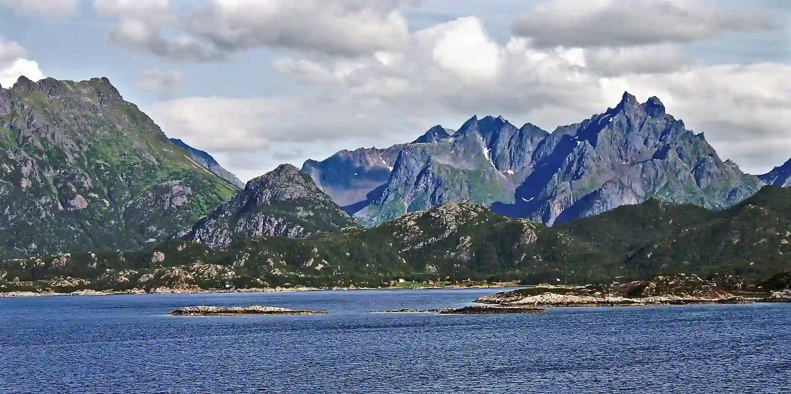
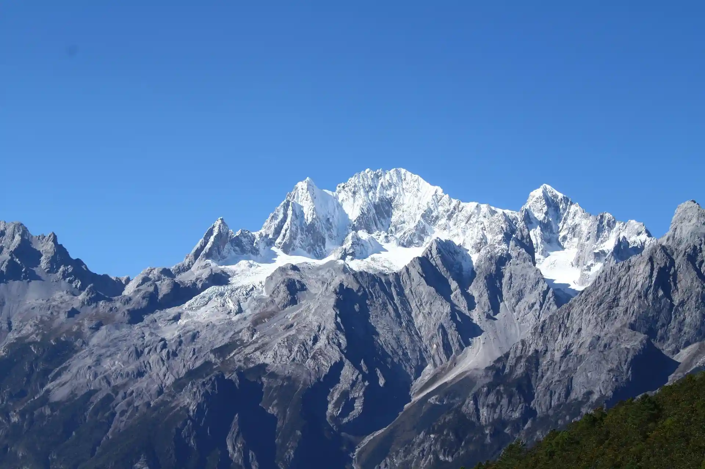
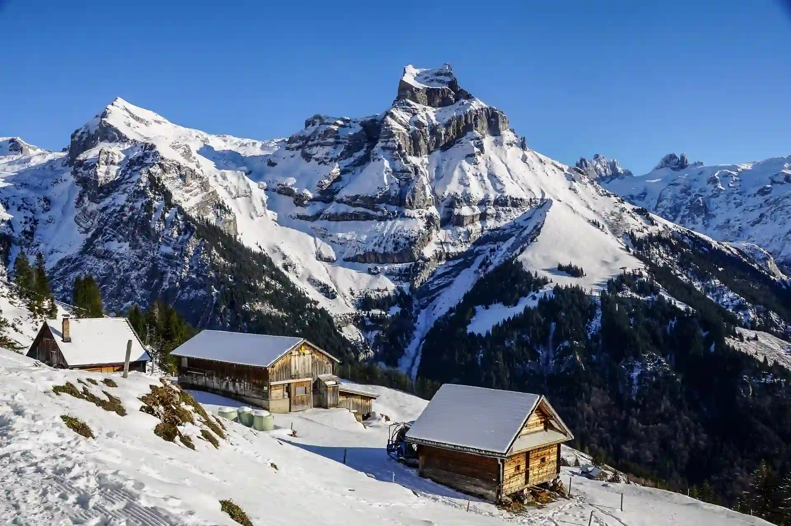
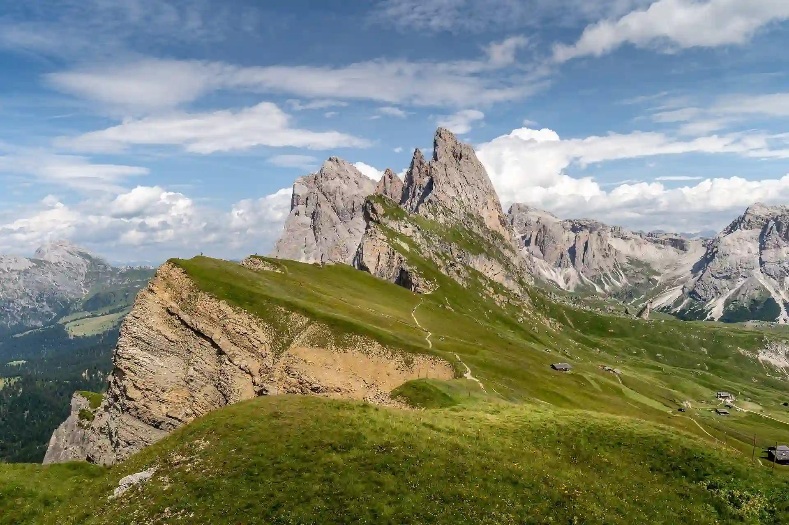

Lofootit
4 päivän matka alkaen 590€
Koe uskomattoman kauniit vuoristomaisemat ohjatuilla matkoillamme. Tarjoamme matkoja kaiken tasoisille seikkailijoille.
Tutustu matkoihin
Ohjattuja vuoristomatkoja
4 päivän matka alkaen 590€

7 päivän matka alkaen 1100€

5 päivän matka alkaen 660€
Koe unohtumaton kokemus luonnon kauneuden keskellä.
Varaa matka